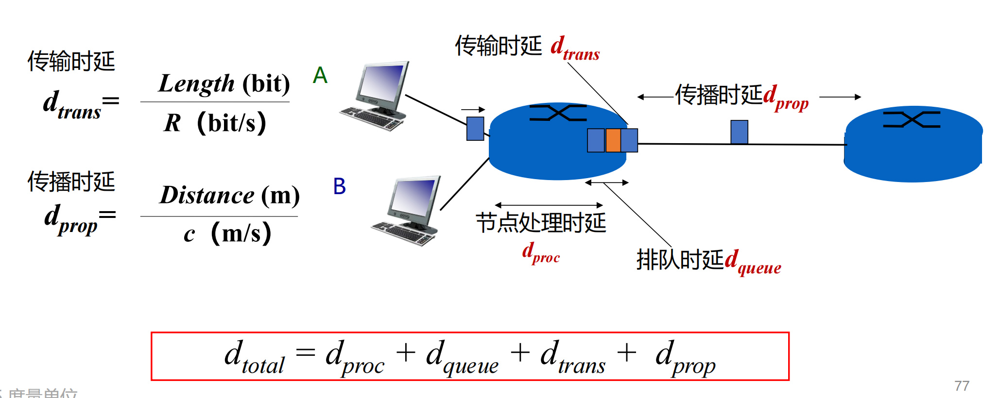

Introduce
网络实例
网络分类
- 个域网PAN
- 局域网LAN
- 城域网MAN
- 广域网WAN
互联网的构成
- 网络边缘
- 端系统：互联网边缘与互联网相连的计算机
- 端系统由各类主机组成
- 主机host
- 客户端
- 服务器
- 功能
- 容纳应用程序
- 产生信息并向接入网发送数据
- 从网络接受数据并提供给应用程序
- 主机host
- 网络核心
- 由互联端系统的分组交换设备和通信链路组成的网状网络
- 分组交换：路由器 链路层交换机
接入网
- 目标：主机连接到边缘路由器上
- 边缘路由器是端系统host去往任何其他远程端系统的路径上的第一个路由器
- 各种异构网络通过边缘路由器接入
- 数字用户线DSL(Digital Subscriber Line)
- 使用电话线连接到数字用户线接入复用器(DSLAM)
- 上下行速度不对称：24-52Mbps下行速率，3.5-16Mbps上行速率
- 同轴电缆(cable)
- 传统有线电视信号线接入头端上网
- 依旧不对称高达40 Mbps–1.2 Gbps下行传输速率，30-100 Mbps上行传输速率
- 无线接入
- 无线局域网(wlan)
- 广域蜂窝网络(wcdma, lte, 5g)
- 企业和家庭网络
物理介质
- 传输单位：位(bit) 1B = 8b
- 物理媒体
- 指发射机和接收机之间的具体链路介质
- 引导型介质：信号在固体介质中传播，例如铜、光纤、同轴电缆
- 非引导型介质：信号自由传播，例如无线电(陆地无线电、卫星无线电信道)
- 光纤
- 高速运行:高速点对点传输（10-100 Gbps以上）
- 低误码率
- 双绞线
- 两根绝缘铜线互相缠绕为一对
- 电话线位1对双绞线
- 网线为4对双绞线
- 第五类 100Mbps-1Gbps
- 第六类 10Gbps
- 同轴电缆
- 两根同心铜导线，双向传输
- 电缆上的多个频率通道
- 带宽可达100Mbps
- 非引导型介质
- 无线电
- 无线链路类型
网络核心
- 目标：将海量的端系统连接起来
- 本质是由各类交换机(路由器)和链路，构成的网状结构
- 分组交换(packet)
- 主机将数据分成分组，发送到网络
- 网络将数据分组从一个路由器转发到下一个路由器，通过从源到目标的路径上的链路，逐跳传输抵达目的地
- 两大功能
- 路由:确定数据分组从源到目标所使用的路径
- 通过路由协议与算法产生路由表
- 转发:由器或交换机将接收到的数据分组转发出去（即移动到该设备的某个输出接口）
- 由入端口确定，查本地的路由表
- 路由:确定数据分组从源到目标所使用的路径
- 电路交换：面向连接方式
- 多路复用
- 频分多路复用(FDM)
- 时分多路复用(TDM)
- 多路复用
- 存储转发的报文(message)交换：
- 路由器需接收到全部的报文，才能开始在下一跳发送报文
- 将L位数据报文，以Rbps的速率发送到链路中，需要L/R秒
-
分组交换
- 将大报文分解为小分组
- 通信两方以分组为单位，使用存储转发机制
- 以分组作为数据传输单元
三种交换的比较 + 电路交换需要建立连接并预留资源，难以实现灵活复用 + 报文交换(Message Switching)和分组交换较灵活，抗毁性高，在传送突发数据时可提高网络利用率 + 由于分组长度小于报文长度，分组交换比报文交换的时延小，也具有更好的灵活性
协议与分层结构
协议设计目的：进行网络中的数据交接而设立的规则
三大要素
- 语法：规定传输数据的格式（如何讲）
- 语义：规定所要完成的功能（讲什么）
- 时序：规定各种操作的顺序（双方讲话的顺序）
协议分层结构
- 层次栈(a layer of stack)
- 每一层都使用其下一层提供的协议，并为上一层提供自己的服务
- 对等实体(peers)
- 不同机器上构成相应层次的实体成为对等实体
- 接口 (interface)
- 接口定义下一层为上一层提供什么服务
- 网络体系结构(network architecture)
- 协议栈：每层的协议集合
服务原语
- 面向连接：每一个请求或响应后，都在对方产生一个指示或者确认动作
- 无连接：简而言之就是不应答
六个核心服务原语：
- 连接请求
- 接受响应
- 请求数据
- 应答
- 请求断开
- 断开连接
协议是水平的(即是在同一层的不同节点之间的)，服务是垂直的，即是在不同层的不同节点直接的。
参考模型
OSI参考模型
- OSI: Open Systems Interconnection 七层模型
- 物理层(physical layer): 定义如何在信道上传输0、1，bits on the wire
- 数据链路层(data link layer):实现相邻（Neighboring）网络实体间的数据传输
- 成帧（Framing）：从物理层的比特流中提取出完整的帧
- 网络层(network layer)：将数据包跨越网络从源设备发送到目的设备
- 路由：在网络中选取源到目的地的转发路径，通常通过网络可达性动态选取最佳路径，也可能使用静态路由
- 传输层(transport layer)：将数据从源端口发送到目的端口(进程到进程)
- 会话层(session layer)：利用传输层提供的服务，在应用程序之间建立与维持会话，并能使会话获得同步
- 表示层(presentation layer)：将数据从一种格式转换为另一种格式
- 应用层(application layer): 通过应用层协议，提供应用程序边界的网络服务调用
TCP/IP参考模型
- 先有TCP/IP协议栈，然后有TCP/IP参考模型
- 参考模型只是用来描述协议栈的
- 链路层(link layer)：描述了为满足无连接的互联网络层需求，链路必须具备的功能
- 网络网层(Internet Layer): 允许主机将数据包注入网络，让这些数据包独立的传输至目的地，并定义了数据包格式和协议（IPv4协议和IPv6协议）
- 传输层(Transport Layer): 提供端到端的通信，定义了传输层协议（TCP协议和UDP协议）
- 应用层(Application Layer): 传输层之上的所有高层协议：DNS、HTTP、FTP、SMTP...
- 端对端原则(聪明终端&简单网络)：端系统负责丢失回复等
- IP分组交换的特点
- 可在各种底层物理网络上运行(IP over everything)
- 可支持各类上层应用(Everything over IP)
- 每个IP分组携带各自的目的地址，网络核心功能 简单（通过路由表转发分组），适应爆炸性增长
比较
- 基本设计思想：通用性与实用性
- OSI明确了服务、协议、接口等概念，更具有通用性，不局限于特定协议(先有模型后设计协议)
- TCP/IP仅仅是对已有协议的描述
- 无连接与面向连接：
- OSI模型网络能够支持无连接和面向连接通信
- TCP/IP模型的网络层仅支持无连接通信 IP
计算机网络度量单位
- 比特率(bit rate)
- 主机在数字信道上传送数据的速率，也称数据率
- 比特率的单位是b/s
- 带宽(bandwidth)
- 网络中某通道传送数据的能力，即单位时间内网络中的某信道所能通过的"最高数据率"
- 单位是bit/s
- 包转发率(PPS)
- 全程是Packet Per Second，即每秒转发的数据包数量
- 线速转发：交换机端口在满负载的情况下，对帧进行转发时能到达该端口线路的最高速度
-
时延(delay)
- 传输时延(transmission delay)：从结点进入传输媒体所需要的时间，又称为发送时延
- 传播时延(propagation delay)：电磁波在信道中传播一定距离所需要的时间
- 处理时延(processing delay)：主机或路由器在收到分组时进行处理所需要的时间
- 排队时延(queuing delay)：分组在路由器输入输出队列中排队等待处理的时间
 + 往返时延RTT(round-trip time) + 从发送方发送数据开始，到发送方收到接收方的确认（接收方收到数据后立即发送确认），总共经历的时延 + 可用于判断网络的通断性、测试网络时延、计算数据包丢失率等 +
ping命令 + 时延带宽积 + 传播时延 * 带宽，按比特计数的链路长度 + 若发送端持续发送数据，则在发送的第一个bit到达终点的时候，已经发送了时延带宽积个bit + 吞吐量(throughput) + 单位时间内通过某个网络(或信道、接口)的数据量，单位是b/s + 有效吞吐量(goodput) + 单位时间内，目的地正确接收到的有用信息的数目(以 bit 为单位) + 利用率 + 信道利用率指出某信道有百分几的时间是被利用的 + 网络利用率则是全网络的信道利用率的加权平均成绩 + 丢包率 + 所丢失包的数量占所发送数据包的比率 + 时延抖动 + 变化的时延称为抖动(jitter) + 延迟丢包 + 由于数据包延迟到达，在接收端需要丢弃失去使用价值的包